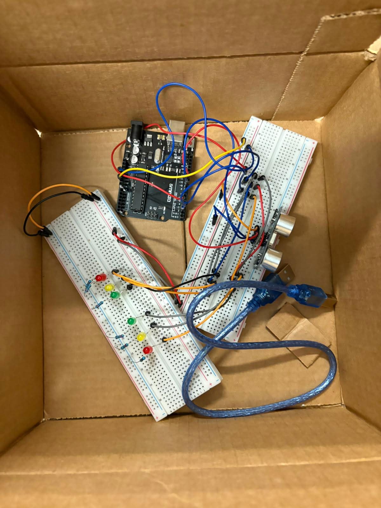

Course: TECH 117
Instructor: Ph.D. Ana Rodrigues
Team Members:
Traffic can slow down streetcars when they share the road with regular cars. In this project, we are creating a smart traffic light system that gives streetcars priority. When a streetcar is coming, the system will detect it and turn the traffic light red for cars so the streetcar can pass faster. This will help reduce delays and improve traffic flow. We will know the project works well if the system can correctly detect vehicles and control the lights properly in different situations.
Our main goal is to create a circuit that helps streetcars avoid being dragged into normal street traffic. If a streetcar is coming, the traffic light turns red for cars. Otherwise, normal traffic stays green.
Success is measured by how well the system adapts to traffic and detects multiple vehicles accurately.
Challenges include limited coding skills, available materials, and budget.
To solve this, we used cardboard, toy cars, and simple materials to build a low-cost prototype.

Total Cost: $0

int red = 4;
int yellow = 3;
int green = 2;
const int trigPin = 9;
const int echoPin = 10;
float duration, distance;
void setup(){
pinMode(red, OUTPUT);
pinMode(yellow, OUTPUT);
pinMode(green, OUTPUT);
pinMode(trigPin, OUTPUT);
pinMode(echoPin, INPUT);
Serial.begin(9600);
}
void loop(){
readDistance();
if (distance < 10) {
digitalWrite(red, HIGH);
digitalWrite(yellow, LOW);
digitalWrite(green, LOW);
}
else if (distance >= 10 && distance < 30) {
digitalWrite(red, LOW);
digitalWrite(yellow, HIGH);
digitalWrite(green, LOW);
}
else {
digitalWrite(red, LOW);
digitalWrite(yellow, LOW);
digitalWrite(green, HIGH);
}
delay(200);
}
void readDistance() {
digitalWrite(trigPin, LOW);
delayMicroseconds(2);
digitalWrite(trigPin, HIGH);
delayMicroseconds(10);
digitalWrite(trigPin, LOW);
duration = pulseIn(echoPin, HIGH);
distance = (duration * 0.0343) / 2;
Serial.println(distance);
}
This project demonstrates how sensors and automation can improve traffic flow. The system is simple, effective, and adaptable for real-world use.